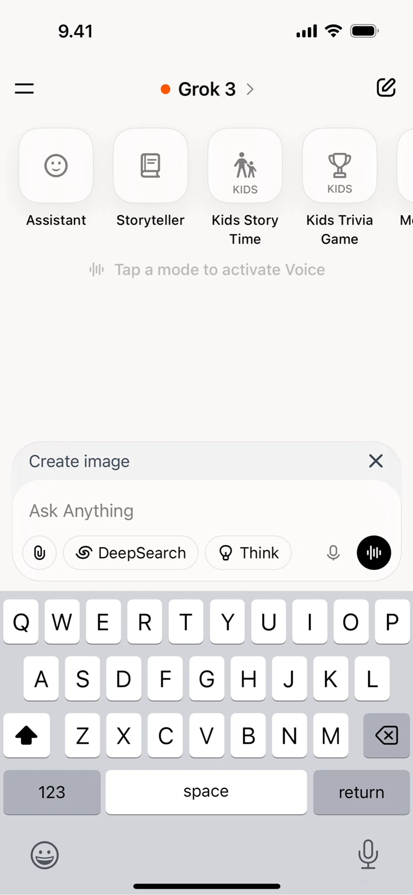
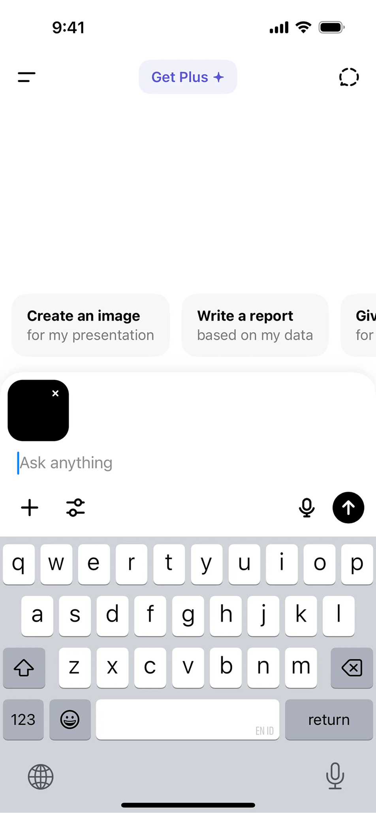
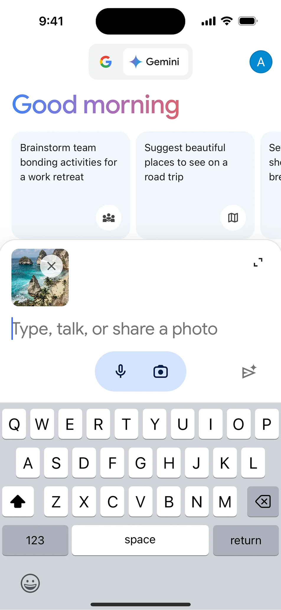

Что это
Инпут — это основная точка входа в диалог с ИИ. От того, насколько он удобен и понятен, зависит первое впечатление от продукта и готовность пользователя взаимодействовать дальше. Хороший инпут снижает барьер первого шага и помогает формулировать запросы точнее.
Когда использовать
В любом продукте с текстовым взаимодействием с ИИ.
Когда пользователь должен сформулировать запрос свободно, без жёстких форм.
В сценариях с итеративным уточнением — чат, поиск, генерация.
При работе с длинными или сложными запросами, требующими редактирования.
Как работает
Инпут адаптируется под длину текста: начинает как однострочное поле и расширяется по мере набора. Плейсхолдер подсказывает, что можно написать. Кнопка отправки появляется или активируется только когда есть контент.
Дополнительные элементы — прикрепление файлов, голосовой ввод, счётчик символов — размещаются внутри поля или рядом, не перегружая основной сценарий.



Чего избегать

Фиксированная высота, которая обрезает длинный запрос.
Плейсхолдер, который исчезает сразу при фокусе — пользователь теряет подсказку.
Слишком много кнопок и действий рядом с инпутом — это отвлекает.
Отсутствие обратной связи при отправке — пользователь не знает, принят ли запрос.